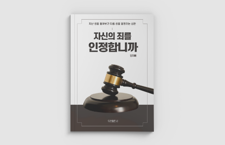
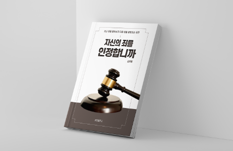

- ‘자신의 죄를 인정합니까’ 북커버 디자인
- ‘Do you admit your sins’ Book cover Design
- 제작 기간 : 2021 . 10 . 02 ~ 2021 . 10 . 19
기여도 : 개인 100%
사용 프로그램 : Adobe Illustrator / Adobe Indesign
- 베르나르 베르베르의 심판이라는 책을 본 후 자신의 죄를 인정합니까 라는 제목으로
북커버 디자인 프로젝트를 진행하였습니다.
제목을 본 순간 법정의 모습과 판사가 떠올라 판사봉을 메인이미지로 생각하였고,
실사 이미지를 활용하여 작업하였습니다. 또한 차분한 브라운 컬러를 활용하여
무게감있게 작업하였습니다.
-
 Still Cut
Still Cut

